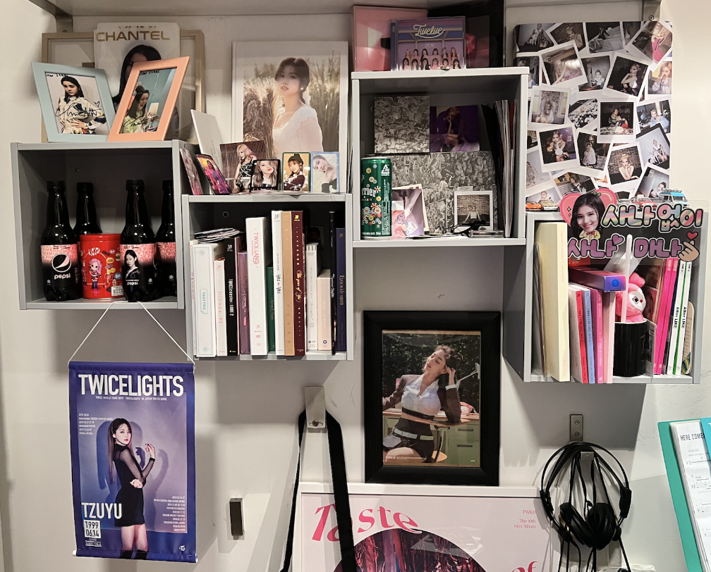
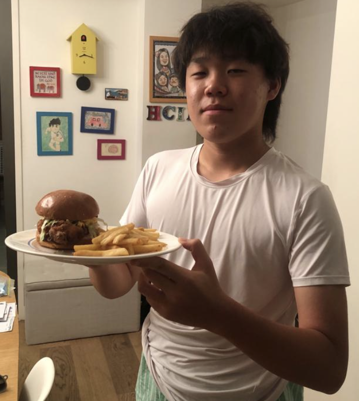

Football is my favourite sport. I started playing this sport when I turned 5. To be honest, I enjoy watching more then playing. As mentioned before, my favourite team is Arsenal, a team based in London. I started liking them because the first football kit my father bought me was Arsenal's kit from the 13-14 season. Since then, I became a through and through Arsenal fan. It's fair to say Arsenal's perfomance started becoming dispiriting after I started supporting. I've experinced all the hardships possible and it is close so paying off. As of right now, Arsenal is top of the table, and are only 13 games away from winning their first leauge title since 2004.
Not only do I watch real football, but my favourtie video game is also a football related one called "FIFA". I created lots of memories with this game, from winning a Champions Leuage in career mode to promoting to division 1 in pro clubs. I just love this game since it acts as a de-stress mechanism while providing a form of entertainment when bored.
K-pop

Most people are surprised when they hear that I'm a K-pop fan, mainly because K-pop is not typically associated with big athletic boys. Anyways, I started following K-pop when Covid-19 started, this was all thanks to the BLACKPINK documentary on Netflix. Since then, I've been following multiple groups including BLACKPINK, TWICE etc. The wall in my room is covered by K-pop merchandise, including albums and lightsticks. (photo above) I had the opportunity to watch BLACKPINK live when they visited Hong Kong back in January this year. It was quite an experince, as I finally got to see my idol with my own eyes.
K-pop plays quite a significant role in me since it's one of my main sources of entertainment. A lot of my peers tell me my K-pop phase will end, but I'm hoping this never ends, since all the spent on K-pop goods will go to waste.
Cooking

The main reason I cook is not because I enjoy it, but beacause I just like eating. I still remember when I was 6 and made my first dish, fried eggs. I felt like frying an egg was a life skill since eggs go well with anything. Since then, I've been trying to discover new dishes to cook. I mainly cook dishes I see on social media platforms such as youtbe and instagram. I feel like being able to create your own food from scartch is a great experince since you get the chance to learn the efforts behind making a seemingly simple dish.
One of my favourite things to make is the fried chicken sandwich. (Photo above) The reason I started making this is because I wanted to create my own version of the McChicken from McDonald's. I followed this recipe online but added my own twists to it. People who tried it, including some family and friends all said it was delicious, which is something I'm really proud of. I'd say the best part of the sandwich is of course the chicken, it's heavenly when a chicken has a crispy exterior but a juicy sensation inside.